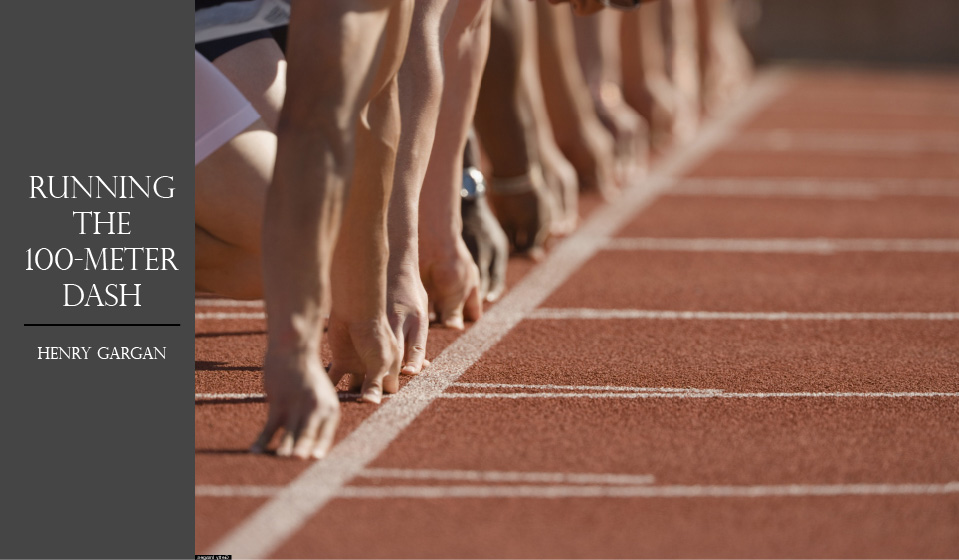
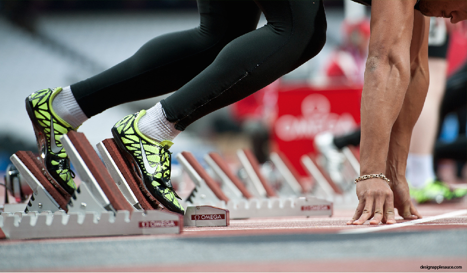
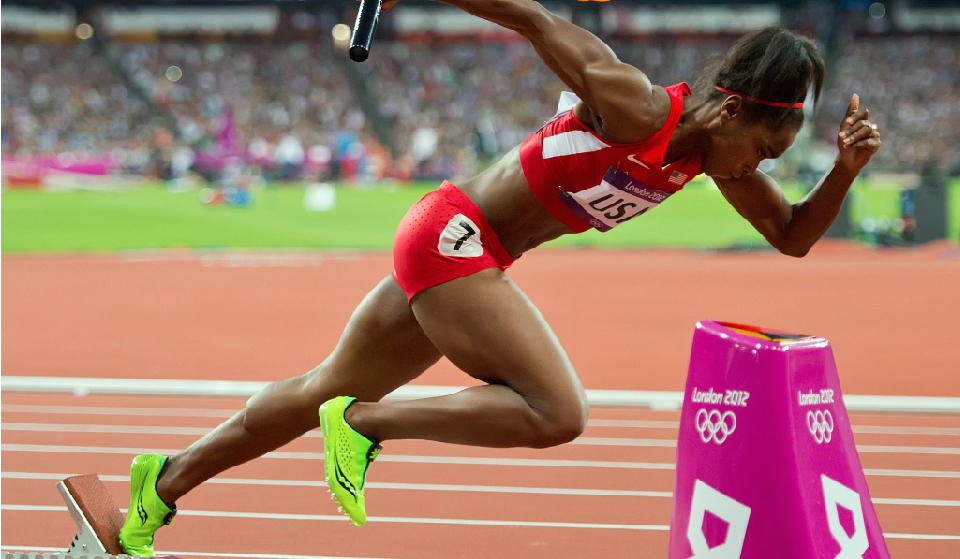
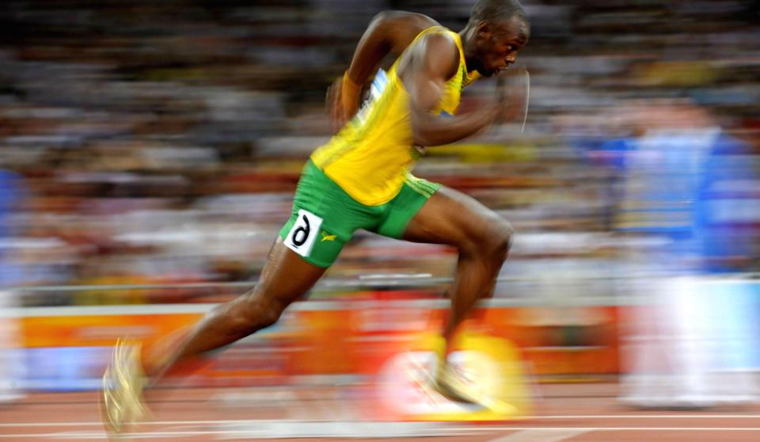
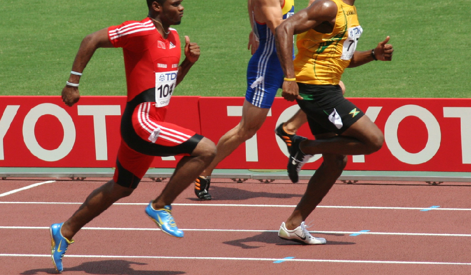
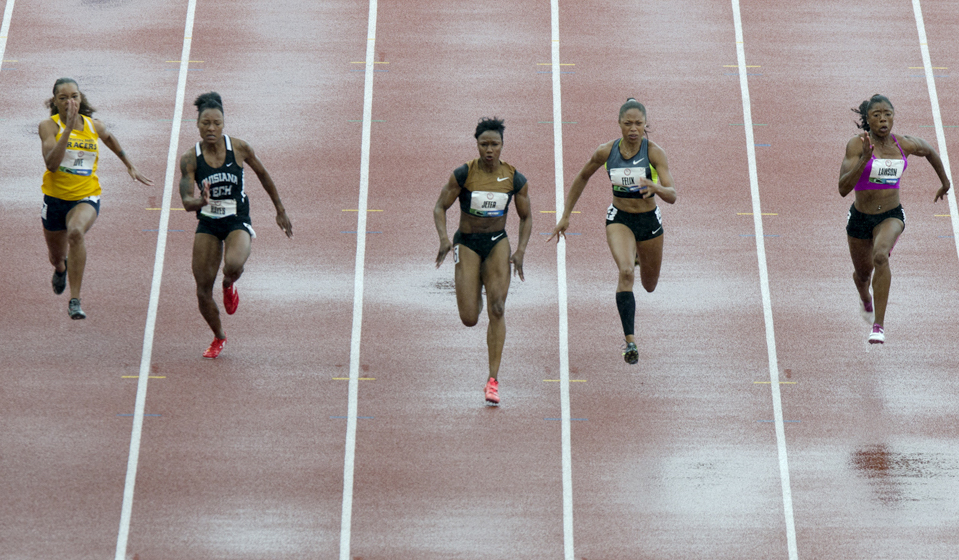

Hover over the icons to learn more about techniques associated with various parts of the body.

1. THE BLOCKS
The explosive force of a sprinter's start is most efficiently harnessed when transferred into the ground at an angle.

2. THE START
At the sound of the gun, the runner extends the front leg as quickly and powerfully as possible, creating an angle of close to 45 degrees between her torso and the ground.

3. DRIVE PHASE
During the drive phase, the runner stays low to continue pushing backward into the the ground. The arm swings begin to constrict and the eyes -- not the head -- begin to look upward.

4. TOP SPEED
After about 60 meters, the runner is fully upright. At this point, his objective is to harness his total body strength to transfer as much downward force into the ground as he can.

5. SUSTAINING
At the end of races, it's often said that someone is "pulling away." But all things being equal after 80 meters, the race is won by whoever slows down the least: Top speed can only be maintained for 20 meters.

6. THE FINISH
Races of this distance are regularly decided by single hundredths of a second, meaning an aggressive lean can be the difference. Whoever owns the first body part to cross the finish line wins the race.